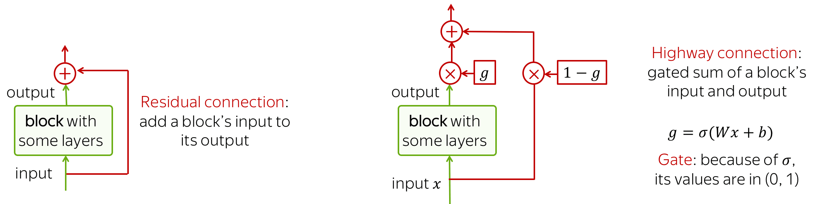
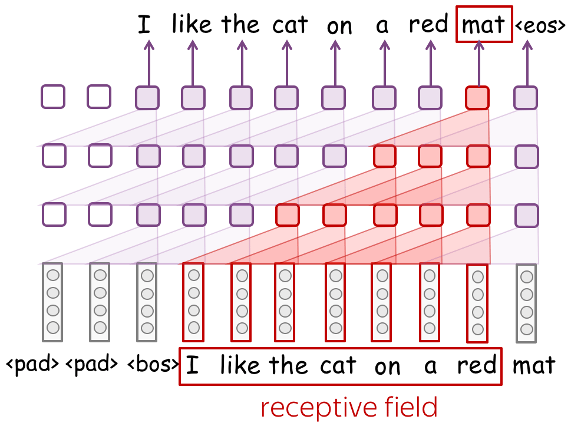

针对文本的卷积神经网络 (英文原文)
本文是对卷积模型的补充介绍。其中包含了对通用卷积模型的详细描述，同时也包括对特定任务的卷积模型的配置介绍。 大部分内容是从相应的课程里面复制过来的。为了方便阅读，本文将它们收集到一起。更多的的内容请参见: 参数：卷积核大小，步长，填充，偏置量 和 K-最大池化.
图像中的卷积与平移不变性 (英文原文)
卷积网络最初是为计算机视觉任务设计的。因此，让我们首先来了解图像卷积模型背后的直观原理。
想象一下，我们想要把一张图片分为几个类别，例如猫、狗、飞机等。在这种情况下，如果你想在图像上找到一只猫，你并不关心这只猫位于图像的什么位置，你核心关心猫是否在图像中。
卷积网络对图像的每个局部区域都采用同样的操作来提取特征。每个操作都是在寻找图像中与给定模式相匹配的特征，卷积网络会自动学习哪些模式特征是有用的。 随着卷积网络层数的增加，学习到的模式特征会变得越来越复杂：从浅层的线条特征到深层的非常复杂的模式特征（例如，整个猫或狗)。更多内容，你可以阅读分析与解释部分中的例子。
这种卷积网络的属性被称为平移不变性: 平移是因为我们考虑空间上移动，不变性是我们希望特征不会随着空间的改变而改变。
The illustration is adapted from the one taken from
this cool
repo.
文本中的卷积 (英文原文)
对于图像来说卷积网络很容易理解，例如，我们希望能够移动一只猫，因为我们并不关心猫在哪里。但是，对于文本呢？乍一看，这并不简单：我们不能轻易地移动短语---因为短语的意思会改变，或者我们会得到一些没有什么意义的文本或者短语。
然而，在一些应用中，我们可以想到与卷积模型同样的直觉。让我们想象一下，当我们对文本进行分类，判断该文本是否是积极或者消极的情绪，而不是像分类图像中的猫/狗的时候。 那么，有一些词和短语可能是非常有信息量的 "线索"（例如，它是伟大的，无聊到死的， 绝对惊人的 ，有史以来最好的，等等)， 剩下的还有一些词语根本一点都不重要。我们并不太关心在文章的什么地方看到“无聊到死” 的内容来理解其情感，对吗？
一个典型的模型：卷积 + 池化 模块 (英文原文)
沿着上面所述的直观原理，当我们想要检测一些模式特征，我们其实不太关心这些模式特征所在的具体位置。为了达到这样的目的，我们可以通过两层网络来实现：
- 卷积：寻找特定模式特征的匹配 (正如我们上面所看到的猫的头部）
- 池化：在空间上整合那些匹配（无论是在局部层面，还是全局层面）
下图展示了一个针对文本的典型的卷积模型。通常，一个卷积层被应用在word embedding（单词的特征表达，词嵌入）上，紧接着就是一个非线性层（通常是ReLU）以及一个池化操作。这些是卷积模型的主要构件：对于特定的任务，配置可以不同，但这些构件是标准的。
接下来，我们将详细地讨论这些主要构件，如卷积和池化，然后考虑模型的修改。
值得注意的是，针对特定任务的模型修改会在相对应的课程中有所描述。为了方便起见，我们在这里仅仅重复卷积网络在特定任务中的应用。
模型构件：卷积 (英文原文)
计算机视觉中的卷积是用滑动窗口的方式来处理图像，并对每个窗口应用相同的操作，即：卷积滤波器 。一个卷积层通常有好几个滤波器，不同的滤波器检测不同的模式特征（下面会详细介绍）。
右图（来自一个GitHub仓库：链接）显示了一个滤波器的运行过程：底部是输入图像，顶部是滤波器的输出。由于图像有两个维度（宽度和高度），所以卷积是二维操作。

Convolution filter for images. The illustration is from
this cool
repo.
与图像不同的是，文本只有一个维度。因此，如图所示，针对文本的卷积操作是一维操作。
Convolution filter for text.
卷积是应用在每个窗口上的线性操作 (英文原文)
一个卷积是一个线性层（后面紧接着非线性操作），它可以被应用在每一个输入窗口内部。我们有如下形式化定义：
- \((x_1, \dots, x_n)\) ： 输入单词的特征表达， \(x_i\in \mathbb{R}^d\)；
- \(d\) (输入通道数) ： 单词特征表达的维度；
- \(k\) (卷积核大小) ： 一个卷积的窗口长度 （如图所示，\(k=3\));
- \(m\) (输出通道数) ： 卷积滤波器的个数（由卷积产生的通道数）。
一个卷积是一个线性层 \(W\in\mathbb{R}^{(k\cdot d)\times m}\)。对于一个\(k\)大小窗口\((x_i, \dots x_{i+k-1})\)，卷积层把这些拼接到一起的特征向量作为输入： \[u_i = [x_i, \dots x_{i+k-1}]\in\mathbb{R}^{k\cdot d}\] 然后与卷积层里面的参数进行矩阵相乘： \[F_i = u_i \times W.\] 卷积是用一个滑动窗口来遍历处理所有输入，并对每个窗口进行相同的线性转换。
参数：卷积核大小，步长，填充，偏置量 (英文原文)
• 卷积核大小：看的有多远 (英文原文)
卷积核大小决定了卷积层在每一步观测到的输入元素的个数。对于文本而言，这个值一般在2-5之间。
• 步长：滤波器在每一步移动多远 (英文原文)
步长决定了滤波器在每一步中移动的距离。举例来说，步长为1的情况下意味着我们移动滤波器一个输入元素的距离（图像上这个元素是像素，文本里这个元素意味着词语）。
• 填充：在输入元素两端填充全零的特征向量 (英文原文)
填充意味着在输入两端添加全零的特征向量。如果你使用步长大于1，你有可能会需要填充这个操作。
• 偏置：卷积中线性运算的偏置项 (英文原文)
默认情况下，没有偏置，只有矩阵的乘法。
直观原理：每个滤波器提取一个特征 (英文原文)
直观地说，卷积中的每个滤波器都提取了一个特征。
• 一个滤波器是一个特征提取器 (英文原文)
滤波器将当前窗口中的矢量表征线性地转换为一个单一特征。形式上，对于一个窗口\(u_i = [x_i, \dots x_{i+k-1}]\in\mathbb{R}^{k\cdot d}\)，滤波器\(f\in\mathbb{R}^{k\cdot d}\)计算点积: \[F_i^{(f)} = (f, u_i).\] \(F_i^{(f)}\)是提取的特征，它是由滤波器\(f\)应用到窗口 \((x_i, \dots x_{i+k-1})\)上的结果。
• m个滤波器：m个特征提取器 (英文原文)

一个滤波器提取一个单一的特征。通常情况下，由于我们想要许多特征，因此我们必须利用多个滤波器抽取特征。如图所示，每个滤波器读取一遍输入文本并提取一个对应的特征。滤波器的数量就是你想得到的输出特征的数量。有了m个滤波器，我们上面讨论的卷积层参数的大小将变成 \((k\cdot d)\times m\)。

值得注意的是，以上操作都是可以并行的：当我展示一个CNN处理文本的时候，实际上这些计算都可以并行完成。
模型构件：池化 (英文原文)
卷积操作提取了每个窗口的\(m\)个特征后，池化层“总结”了某些区域的特征。池化层被常常用来减少输入维度, 因此也减少了网络使用的参数数量。
最大池化和平均池化 (英文原文)
目前卷积网络中最流行的是最大值池化(max-pooling), 即在每个维度上取最大值，也就是取每个特征的最大值。

平均池化: 其工作模式和最大值池化非常类似，它计算每个特征在某个维度的均值而非最大值。
K-最大池化（K-max Pooling) (英文原文)
K-最大池化 是最大池化的一个拓展版本，它不是寻找一个沿着某个维度最大值特征，而是选择具有最高值的k个特征。这些特征的都会按照顺序被保留下来。
如果一个网络找到某种模式的次数很重要，那么K-最大池化就很有用。
池化与全局池化 (英文原文)
与卷积类似是，池化也可以被应用于包含几个元素的窗口内。池化也有步长参数，最常见的方法是对不重叠的窗口使用池化。为此，你必须将步长参数设置为与池化窗口大小相同。如下图所示。

池化和全局池化的区别在于，池化是独立应用于每个窗口内来提取特征， 而全局池化是在整个输入上提取特征。对于文本来说，全局池化经常被用来获得一个代表整个文本的单一向量； 这种全局池化被称为最大时间池化，其中 "时间" 轴跨度从第一个输入词语到最后一个词语。

直观地说，每个特征在看到某种模式时都会激活：图像中的视觉模式（线条、纹理、猫爪等）或文本模式(例如，一个短语)。经过池化操作，我们有一个向量，说明输入中出现了哪些模式。
更多细节请参阅分析与解释部分.
模型构件：残差连接 (英文原文)
简而言之: 更简单地训练深层网络！ (英文原文)
残差连接可以让深度神经网络训练变得更加容易。为了处理更长的上下文，你需要堆叠大量的网络层。不幸的是，当堆叠大量的层时， 你可能会遇到在深层网络中从上到下传播梯度变得十分困难的问题。为了避免这个问题，我们可以使用残差连接或更复杂的变体highway连接。
残差连接的操作十分简单: 它仅需要把一个网络模块的输入输出相加。通过这样的方式，梯度不仅可以隐式的通过网络模块反向传播，也可以直接通过这个相加的操作传播回去。
Highway连接与残差连接具有相同的内在动机，但是其使用了门控相加的方式来将一个网络模块输入输出相加到一起，而不是简单的相加。Highway连接十分类似于LSTM中的门控，网络可以学习它可能想要从下到上传递的信息类型（对于LSTM来说，从左到右）。
看一下带有残差连接的卷积网络的例子。通常情况下，我们把残差连接放在有几个卷积层的网络模块上。一个网络可以有几个这样的网络模块，具体数目根据你的任务决定。你可能需要很多层来获得一个像样的感受野。
特定任务：文本分类 (英文原文)
本部分是文本分类中卷积模型部分的总结。有关文本分类任务的详细描述，请参阅主课。
我们现在理解了卷积层和池化层是如何工作的。接下来，让我们一起来修改网络配置结构。在文本分类的例子中：
我们需要一个网络模型，其能够对于不同长度的输入文本均能够产生固定大小的特征向量。
我们需要构建一个卷积模型，其可以将不同长度的文本表示为一个定长向量
用于文本分类的基本卷积模型结构如图所示。请注意，在卷积之后，我们使用全局时间池化。 这是一个关键的操作：它允许将文本压缩成一个单一的向量。模型本身可以是不同的，但是在获取到文本特征的过程中必须使用全局池化来把文本输入压缩成一个单一的向量。

• 一些带有不同大小卷积核的卷积层 (英文原文)
除了选择固定大小卷积核的卷积网络，你可以使用几个不同大小的卷积核的卷积层。将每个卷积应用于数据，在每个卷积之后添加非线性操作和全局池化，然后将结果连接起来（如图所示，为了简单起见，非线性操作被省略了），从而得到用于分类任务的数据的向量表示。

该想法来自于文章 Convolutional Neural Networks for Sentence Classification，有很多该文章的衍生方法。
• 堆叠若干个卷积层和池化层 (英文原文)
你可以把几个含有卷积层+池化层的网络模块叠加起来，而不是仅仅使用一层。在堆叠了几个卷积模块之后，你可以应用另一个卷积层配上全局池化层得到文本的向量表示。记住：我们需要对于不同长度的文本输入得到一个固定大小的特征表示，所以在这里我们需要全局池化。
当你的文本非常长时，这种多层次的卷积就会很有效；例如，如果你的模型是建立在字符级的输入上而不是单词级的输入。
该想法来自于文章： Character-level Convolutional Networks for Text Classification。
特定任务：语言模型 (英文原文)
本部分是语言建模中卷积模型部分的总结。有关语言建模任务的详细描述，请参阅主课。
与用于文本分类的卷积神经网络相比，语言模型有一些不同。在这里，我们将讨论CNN语言模型的一般设计原则；具体架构的详细描述可以在语言模型的相关论文部分找到。
在设计卷积语言模型时，需要注意以下事项:
-
防止来自未来词语特征的信息流
在预测词语的时候，语言模型往往从左到右依次进行预测，因此必须确保模型只使用以前词语的信息进行未来词语的预测，确保你的CNN除了这些词语之外看不到任何东西。例如，如图所示，你可以通过使用填充将词语向右移动。 -
不要删除位置信息
与文本分类不同，位置信息对语言模型非常重要。因此，不要使用池化（在做池化时要非常注意）。 -
如果你堆积了很多层，不要忘记残差连接
如果你堆叠很多层网络，可能很难高效地训练一个非常深的网络。为了避免这种情况，请使用残差连接，请看下面的细节。
感受野：随着层数增加，感受野会变的非常大 (英文原文)
当使用没有全局池化的卷积模型时，卷积模型将不可避免地有一个固定大小的上下文。这似乎是不可取的：“固定大小的上下文”正是我们不喜欢的n-gram模型的原因。
然而，如果一个典型的n-gram模型上下文大小为1-4。那么卷积模型中的上下文可以相当长。请看插图：一个网络具有3个卷积层，其卷积核大小为3，其上下文是长度是7个词语。如果你堆叠很多层，你的上下文长度将会变得非常大。
残差连接：随着网络层数增加，残差连接会变得十分必要 (英文原文)
如果你堆积了很多层，你可能会在训练深度网络时遇到麻烦。幸运的是，对于这一点，你可以使用残差连接来解决该问题。
看看这个带有残差连接的卷积网络的例子。通常情况下，我们把残差连接应用在含有几个卷积网络模块上。一个网络需要若干个这样的网络模块以得到一个像样的感受野。
分析与解释 (英文原文)
卷积能学到什么？分析卷积滤波器
Convolutions in Computer Vision: Visual Patterns
卷积最初是为图像而开发的，当前对于滤波器捕捉的内容以及不同层的过滤器如何以一个层次化结构捕捉图像中的特征已经有了很好的理解。网络中低层捕捉简单的视觉特征，如线条或圆圈，而最终层可以捕捉整个图片特征，例如动物、人等。

Examples of patterns captured by convolution filters for images.
The examples are from
Activation Atlas from distill.pub.
文本分类中的卷积 (英文原文)
本部分来自本课程的文本分类。
对于图像来说，滤波器可以捕获对分类很重要的局部视觉特征。对于文本来说，这种局部特征是单词的n-grams。关于卷积如何对文本起作用的主要发现是：
-
卷积滤波器被用来作为n-grams检测器
每个滤波器都为一个或几个密切相关的n-grams词语而专用。这些滤波器不是同质的，也就是说，一个滤波器经常可以检测到多个明显不同的n-grams。 -
最大池化展现了一种阈值处理行为
在进行预测时，低于某个阈值的数值会被忽略（即与预测无关）。例如，这篇文章研究平均有40%的被池化的n-grams可以被丢弃，然而不会有任何性能损失。
理解一个网络捕捉到信息的最简单方法是看哪些特征模式激活了它的神经元。对于卷积，我们选择一个滤波器，并找到那些最能激活这个滤波器的n-grams。
下面是几个最能激活滤波器的top-1 n-gram的例子。对于其中一个滤波器，我们还展示了导致这个滤波器高度激活的其他n-grams例子---你可以看到这些n-grams的含义非常相似。

更多细节，请看这篇文章: Understanding Convolutional Neural Networks for Text Classification。
语言模型中的卷积 (英文原文)
这一部分来自课程的语言建模的研究思考部分。
我们来看看EMNLP2016论文 Convolutional Neural Network Language Models 中的例子。对于一个简单的卷积式语言模型，作者将开发数据送入模型，并找到最能激活某个滤波器的n-grams。

当一个情感分类的模型学会了挑选与情感相关的相关文字，一个语言模型也可以捕捉到的类似短语。例如，一个卷积核激活了以月份结尾的短语，另一个卷积核激活了以名字结尾的短语；还注意到 卷积核在看到表示“比较”含义的“as … as”相关词语是被激活。